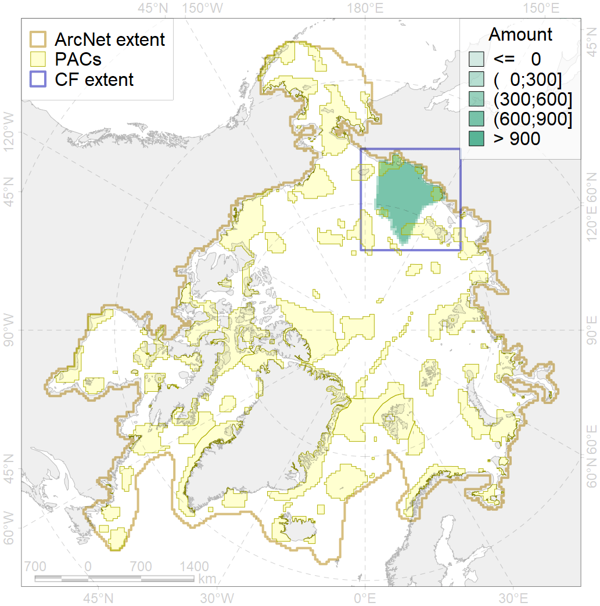
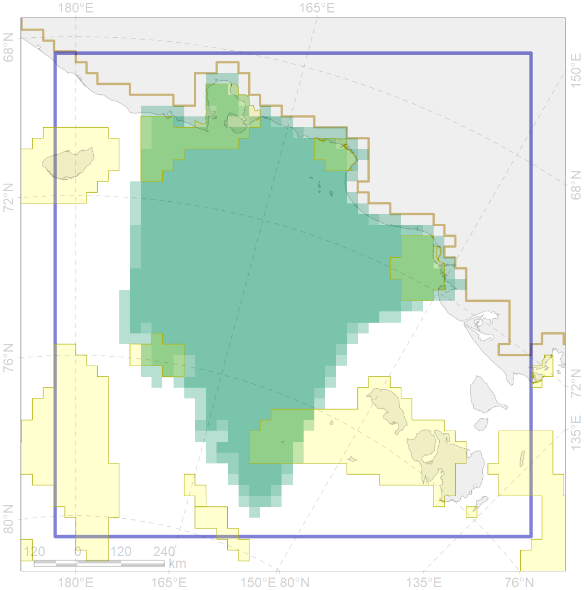

2009

| CF ID | 2009 |
| CF Name | Bearded seal whelping areas in the East-Siberian Sea |
| Time Period | Varies by dataset |
| Source(s) | NOAA, 2002; NOAA, 1988; surrogate data; bathymetry from http://www.naturalearthdata.com/downloads/10m-physical-vectors/ |
| Seasonality | March-June |
| Depth Horizon | 0-200 m |
| Methodology | Data compilation, expert input |
| Author Name | Irina Trukhanova |
| Notes | |
| Conservation Target Set in the Scenario | 0.12 |
| Conservation Target Achieved in the Scenario | 0.180 (Scenario: 150.1%) |
| PAC ID | Proportion in the PAC | Contribution to ArcNet Target Achievement | PAC’s Contribution to the Achieved Target |
|---|---|---|---|
| 8 | 6.4% | 41.6% | 27.7% |
| 9 | 1.4% | 7.1% | 4.7% |
| 10 | 3.6% | 23.0% | 15.4% |
| 11 | 3.5% | 25.3% | 16.9% |
| 57 | 1.7% | 6.5% | 4.3% |
| inner | 16.5% | 103.5% | 69.0% |
| outer | 83.5% | 46.6% | 31.0% |